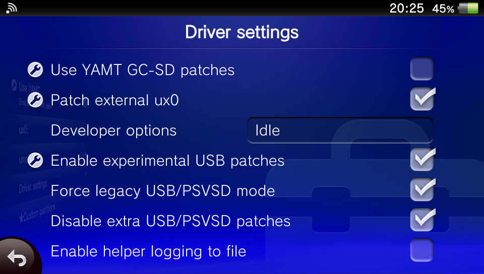
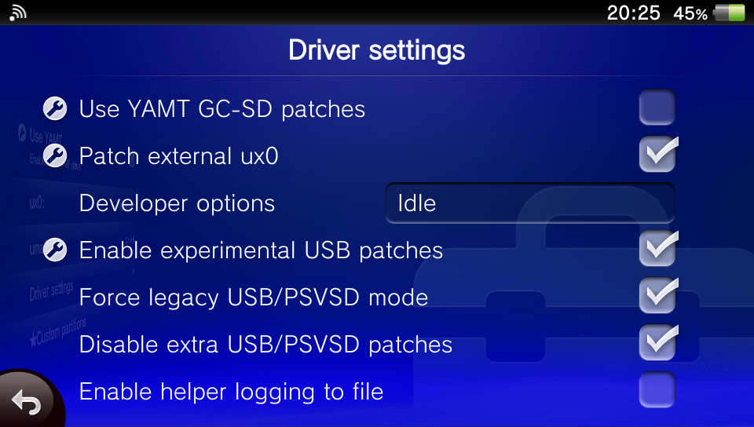

Paddel06's Vita Guide
This site is inspired by the vita.hacks.guide and cimmerian.gitbook.io, while trying to change and add to things that are sometimes confusing on those.
The goal is to provide an extensive, but easy to understand resource for all things Vita and hacking it.
Every instruction should make sense and it should be clear what it does, and why, so users better understand how everything works.
Additionally, this site will try to be as operating system and Vita model agnostic as possible, so the experience is the same across the board. Also, images!
Sorry if this site looks like ass, but I suck at webdev. It was created using my fifth grade HTML knowledge and referencing a ton of online tutorials.
Available in English and German (soon).
If you have any questions, you can find me on Discord: Paddel06#9012
 
